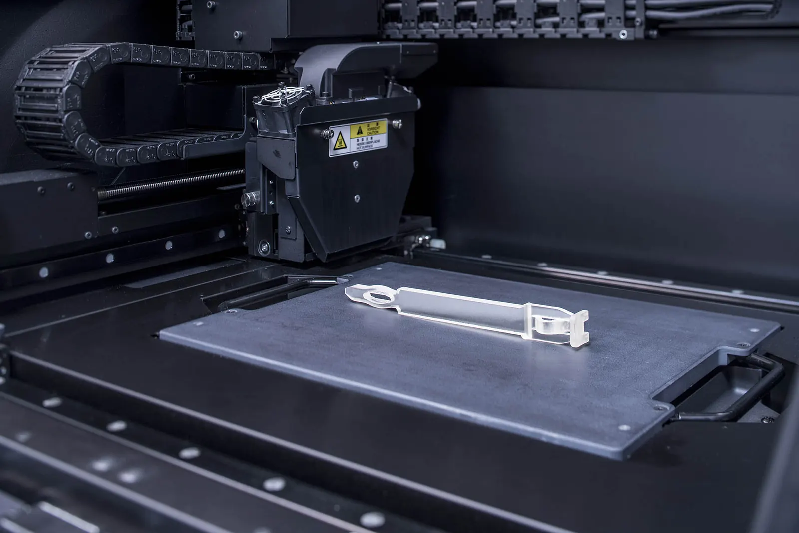
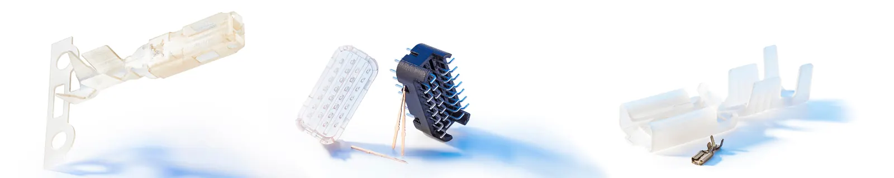
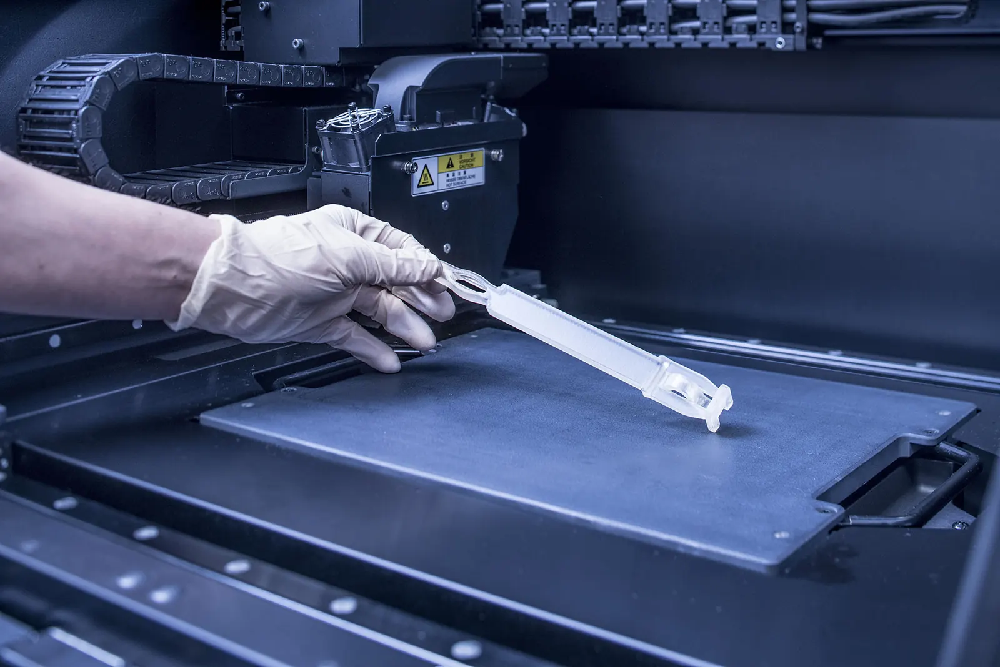
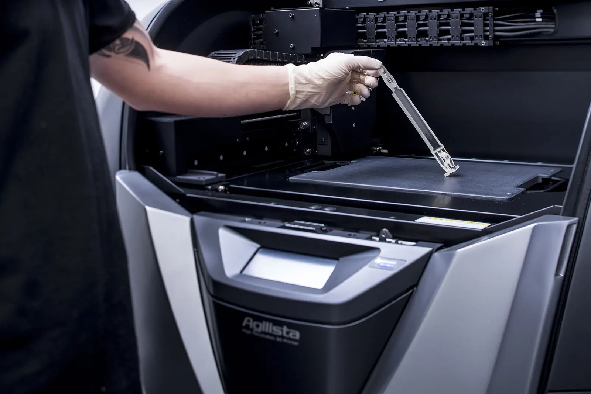
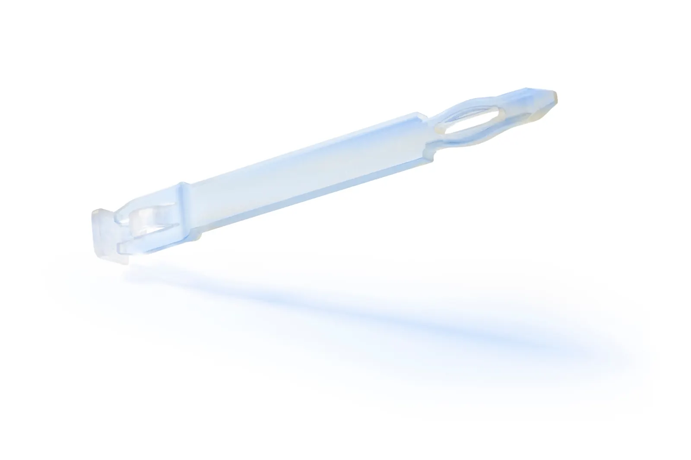
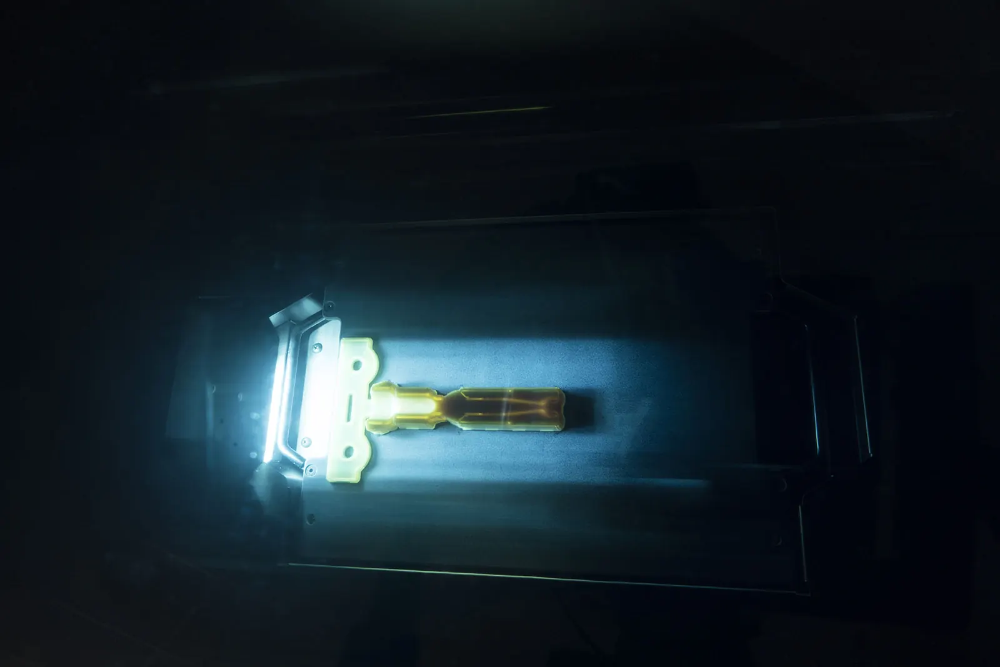

Prototypen – schnell, unkompliziert und kosteneffizient
Testen Sie die Machbarkeit Ihrer Produkte und kommen Sie in kürzester Zeit zu seriennahen Musterteilen.

Von der Skizze zum virtuellen Modell
Die perfekte Umsetzung Ihrer Teile steht zu jeder Zeit im Vordergrund. Deshalb konstruieren wir individuelle Lösungen – von Anfang an.
Mit Hilfe modernster 3D-Software legen wir den ersten Grundstein zur Realisierung Ihrer Teile und schaffen damit eine solide Basis für den weiteren Projektverlauf. Dazu werden die gelieferten Kundenskizzen auf ihre Machbarkeit und Umsetzung geprüft.
Geometrie, Radien und spätere Materialeigenschaften werden fachmännisch begutachtet.
Besonderheiten im Aufbau und voraussichtlich komplexe Bereiche werden bereits in dieser Phase einbezogen.
Entscheidende Parameter wie einzelne Prozessschritte, Kapazität und interne Ressourcen.
Neue Dimensionen
Beurteilen Sie die Konstruktion und den Aufbau Ihrer Stanzteile anhand von vergrößerten 3D-Modellen.
Um in einem frühen Stadium der Projektphase die korrekte Umsetzung und Funktion Ihrer Stanzteile zu beurteilen, reicht es manchmal nicht aus, dies nur anhand einer Skizze zu machen. Je nach Komplexität ist es sinnvoll, das theoretisch geplante Produkt wirklich in Händen zu halten.
Musterteile brauchen aber, trotz modernster Technik, ihre Zeit und werden meist in der Originalgröße gefertigt. So sind Besonderheiten wie Winkel oder kleine Einkerbungen nicht immer eindeutig zu sehen und zu beurteilen. Durch den Einsatz von 3D-Druckern ist es möglich, extrem schnell und in stark vergrößertem Maßstab Teile zu „drucken“, die sowohl für Kunden zur Ansicht als auch intern für den Musterbau verwendet werden können.
Teile entstehen schnell – für die Ansicht beim Kunden und intern für den Musterbau.
Winkel und kleine Einkerbungen sind im vergrößerten Maßstab eindeutig zu beurteilen.
Das geplante Produkt wirklich in Händen zu halten, hilft bei komplexen Teilen oft mehr als eine Skizze.





Probieren Sie es aus: Wählen Sie ein Stanzteil und starten Sie den Druck.
Der 3D-Drucker baut das vergrößerte Muster Schicht für Schicht auf. Wählen Sie Crimpkontakt, OBD-Stecker, Schlüsselanhänger mit PPM-Logo oder Platinen-Clip, drehen Sie den Drucker mit Maus oder Finger und blättern Sie durch die Schichten.
Material: Bernstein
Schematische Demonstration (stark vergrößert, kein Kundenteil). Alles läuft lokal in Ihrem Browser – es werden keine Daten übertragen.
Stark vergrößert
Winkel und kleine Einkerbungen sind im vergrößerten Muster eindeutig zu sehen und zu beurteilen.
Früh erkennen
Konstruktion und Funktion Ihrer Stanzteile lassen sich schon in einem frühen Projektstadium bewerten.
Extrem schnell
Anschauungsmuster für Kunden und Musterbau intern – ohne auf Originalgröße-Muster zu warten.
Erste Ergebnisse in kleiner Stückzahl
Bereits in der frühen Projektphase ist es wichtig, seriennahe Teile für Machbarkeits- und Produkttests vorliegen zu haben.
Durch Laserschneiden können wir diesem Wunsch schnell nachkommen und innerhalb von kurzer Zeit Prototypen herstellen, die erste technische Erkenntnisse liefern. Dabei werden Teile aus dem vorgesehenen Serienmaterial, vorzugsweise Kupferlegierungen, geschnitten und im Musterbau weiter bearbeitet (beispielsweise durch Prägen, Biegen oder Umformung).
Mit Hilfe unserer Partner können wir Ihnen die Musterteile bereits mit seriennaher Oberflächenbeschichtung liefern. Dieses Vorgehen verkürzt die Reaktionsfähigkeit im Fall einer nötigen Optimierung und so die Realisierungszeit der finalen Stanzteile erheblich und gestattet eine sehr flexible Abstimmung der Projektteilnehmer, sowohl intern als auch extern.
Teile aus dem vorgesehenen Material, vorzugsweise Kupferlegierungen.
Weiterbearbeitung durch Prägen, Biegen oder Umformung.
Mit Partnern auch mit seriennaher Oberflächenbeschichtung.
Fragen zu Prototypen
Welche Prototyping-Verfahren bietet PPM an?
PPM bietet CAD-Konstruktion, 3D-Druckmuster und Laserschneiden an. So kommen Sie in kürzester Zeit zu seriennahen Musterteilen und können die Machbarkeit Ihrer Produkte testen.
Was prüft PPM bei der CAD-Konstruktion?
Die gelieferten Kundenskizzen werden auf Machbarkeit und Umsetzung geprüft. Geometrie, Radien und spätere Materialeigenschaften werden fachmännisch begutachtet; Besonderheiten im Aufbau und komplexe Bereiche werden früh berücksichtigt und Parameter wie Prozessschritte, Kapazität und interne Ressourcen festgelegt.
Warum sind 3D-Druckmuster in vergrößertem Maßstab sinnvoll?
Musterteile werden meist in Originalgröße gefertigt, sodass Winkel oder kleine Einkerbungen nicht immer eindeutig zu sehen sind. Im stark vergrößerten Maßstab lassen sich Konstruktion und Funktion Ihrer Stanzteile schon früh besser beurteilen.
Aus welchem Material entstehen Laserschnitt-Prototypen?
Die Teile werden aus dem vorgesehenen Serienmaterial geschnitten, vorzugsweise aus Kupferlegierungen, und im Musterbau weiterbearbeitet, zum Beispiel durch Prägen, Biegen oder Umformung. Mit Partnern sind Musterteile auch mit seriennaher Oberflächenbeschichtung möglich.
Vorbereitung ist alles.
Planen Sie Ihr Endprodukt von Anfang an perfekt – starten Sie Ihr Projekt mit unserem Prototyping.